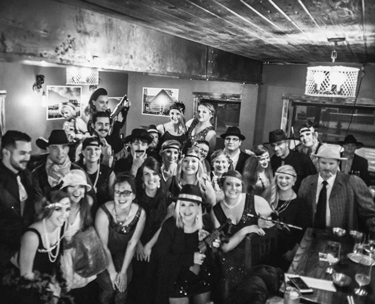

White Sulphur Springs Newest Cocktail Lounge and Eatery

The Jawbone is a speak-easy style cocktail lounge in the heart of Montana. Executive Chef Mike Sauer from Big Sky, MT runs the kitchen while twin sisters, Amber and Cassie Coburn run the bar. Buying the bar at the young age of 20 years old, they have created a fun, new atmosphere in Central Montana. The menu features filet mignon, stuffed chicken breast, seared pork belly, among others. Additionally, the menu changes seasonally and the kitchen is able to cater to each individuals needs. With an open kitchen concept, we create an experience for every patron. Whether you want to sit at the bar and watch all the action happen, or cozy up in the corner next to the soap stone fire place, we have a spot for every occasion. Come on down for your next date night or birthday dinner!
Did we mention our chef has a degree in pastries? Try some of our homemade Montana Huckleberry Cheesecake or Creme Brulee of the week.
Upcoming Events
- Wine Tasting September 25
- Fall Menu Release October 3
- 1 Year Celebration October 12
- Costume Party October 31
Did you know we offer private parties? Birthday parties, retirement celebrations, rehearsal dinners, we cater to it all. Please call 406-544-7643 to get an estimate.
Follow our facebook page and instagram @the_jawbone to stay up to date on all our events and specials throughout the month!
Reservations are highly recommended. Call 406-544-7643 to reserve a table or book a reservation on our facebook page.